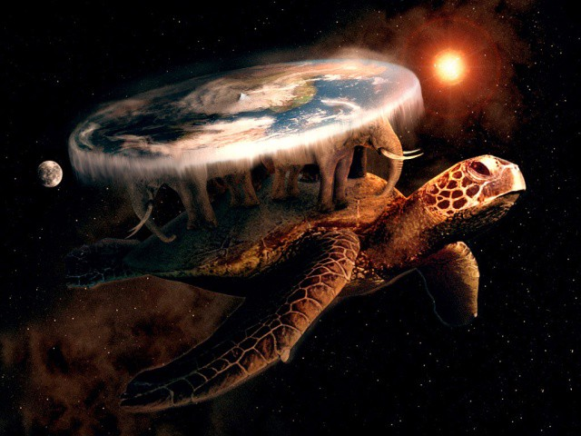

Flat Is Fact
The Earth is Flat
According to the globe model (which I point out to you is just a
model), the Earth pulls things down and causes them to accelerate at
9.8m/s². The Earth also rotates. But we know that rotating objects
will push things outwards due to centrifugal force. For example, if
you were to take a basketball, put water on it, and then spin it,
the water will move outwards. This is the same force you feel when a
car moves in a circle.
So if the Earth is spinning, it should exert a force that causes
things to accelerate outwards. Now here’s a question: do you feel
the Earth spinning right now? Unless you’ve spun around yourself,
you don’t. Since you don’t feel the Earth rotating, that means it
cannot be rotating. A common counterargument is that you can only
feel motion if you accelerate. The problem with that counterargument
is that it neglects that a rotation is an acceleration — an inwards
acceleration. So clearly, something isn’t adding up here. Not only
that, you can do the math to prove that under the spinning model,
objects cannot fall at 9.8m/s² To calculate the centrifugal force,
we use F =mv²/r. The force of gravity is F=mg. So the net force
would be F = mg-mv²/r = m(g — v²)/r. To calculate the centrifugal
acceleration, we use a = v²/r = (460m/s ^2)/(6,371,000m) = 0.033m/s²
This means that the outward centrifugal acceleration of objects is
0.033m/s² The downward acceleration of objects due to gravity alone
is 9.8m/s² This means that the total acceleration of an object is
9.8m/s² minus 0.033m/s² = 9.767 m/s². This means objects fall down
at 9.767m/s² NOT 9.8m/s². In actual experiments, the acceleration of
objects measured is 9.8m/s². Therefore, the centrifugal acceleration
measured is zero, meaning that the Earth DOES NOT spin.
And for the ultimate proof, here’s NASA admitting that the Earth is
flat.

Real image of the turtle below the Flat Earth. Real hidden photo
from NASA.